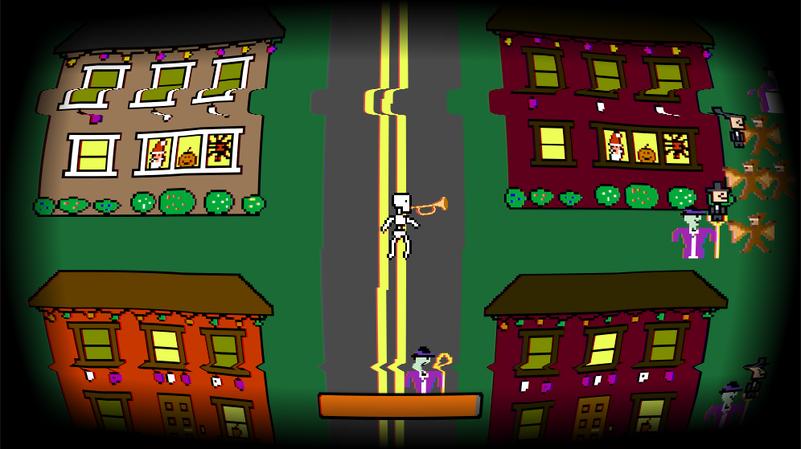
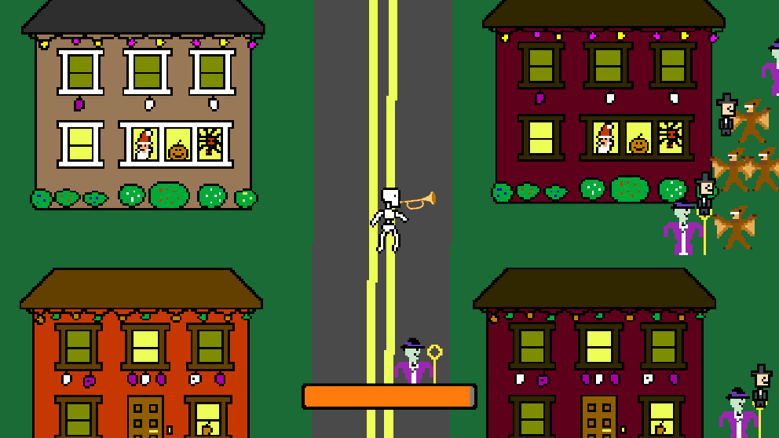
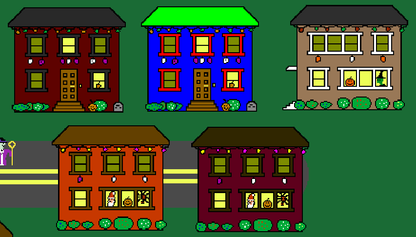
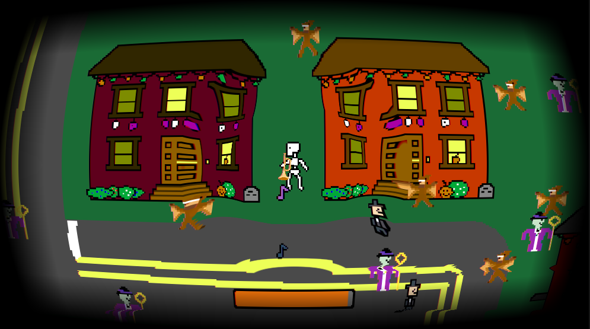

In this Halloween game inspired by the “doot skeleton” meme, you play as a trumpet-wielding skeleton with nothing left to lose. Play the web build now and fight off hordes of trick-or-treaters with a bone to pick! With time running out, you must scare children to prolong your unnatural existence in this plane of reality.
I did a lot of work with Unity image-processing shaders in this project. I made a post processing shader that mimicked the look of a glitchy CRT television with several techniques. It warps the entire image in a parabolic shape towards the center to mimic the look of bulging glass. It also fades out the outside edge of the screen into black. To create a glitchy TV effect I added screen tearing, where two moving horizontal lines drag across the screen and pull the image to the side. Another subtle way that I create a glitchy feel is by creating what I call a “Hazy Effect” where the redness and blueness of a pixel are pulled in opposite directions in a sine wave function of time. The effect is subtle but very effective for making the scene look a bit glitchy. The final effect I use is the CRT lines, which stripe the screen black to replicate the lines on a CRT television.
 Another image processing shader is being used on the house sprites for key-coloring. The texture for the houses uses red for the window frames, blue for the walls, and green for the roof. An image processing shader is set with a random house color theme at the start of the game for each house. Depending on the theme selected, the house will change color.
I created the combat system for this game as well. The skeleton wiggles around as they move so that I wouldn't have to make a walk animation. I made the shooting, targeting, and yelling area of effect. The yelling uses the post processing shader to create a “shock wave” around the player that expands away and dissipates as it gets further away.
I also made most of the pixel art used in the main game. The only pixel art that I didn't make was two of the children and the trumpet.